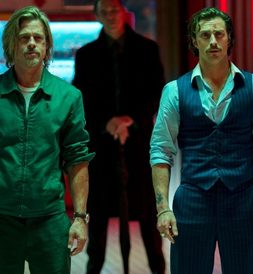

Actors
-Brad Pitt
Brad Pitt plays Ladybug who. He is a veteran assassin, who seemingly never has luck and is trying to only accept small jobs that do not require killing.
-Joey King
Joey King as The Prince, a manipulative young assassin disguised as a schoolgirl, who seeks vengeance on the White Death.
The Director
-David Leitch
David Leitch is a billion dollar film director, actor, stuntman, writer, producer, and stunt coordinator. He co-directed John Wick (2014)
Rating
Rated R for strong and bloody violence, pervasive language, and brief sexuality.
Description
Bullet Train is a 2022 American action comedy film directed by David Leitch and starring Brad Pitt as an operative (and former assassin) who must battle killers while riding a bullet train.